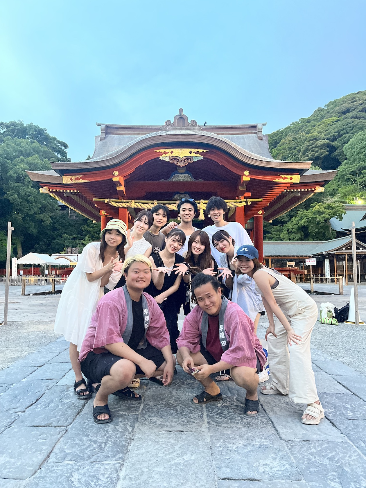
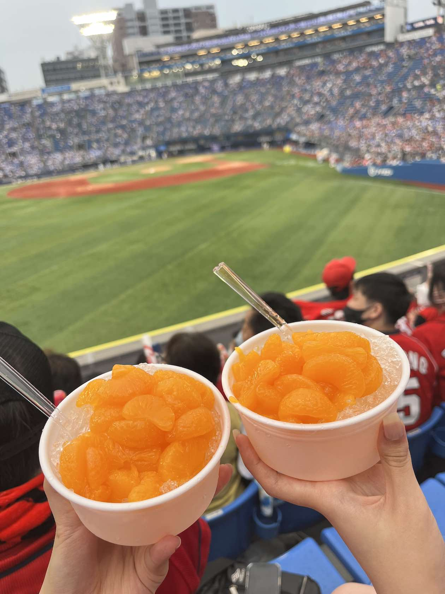

好きなこと沢山



らすかる
＃食べること ＃家系ラーメン ＃映画 ＃ハリポタ ＃シリウス ＃野球 ＃広島カープ ＃菊池涼介 ＃INI ＃オムライス ＃ゴロゴロ ＃温泉 ＃空港 ＃飛行機 ＃広告研究会 ＃映像制作 ＃デザイン
こんにちは！
2002年9月17日誕生
2015年4月横浜共立学園入学(ダンス部)
2021年4月早稲田大学教育学部複合文化学科入学
2022年4月LeadersにてwebDコース受講
今回、動きのあるサイトを作れるようになりたくLAに参加しました！
また淡い色に逃げてしまいがちなので、色についてもより学びながら
かっこいいサイトを作れるようになりたいです。
よろしくお願いいたします！
これはサークルで行った芸能人のトークイベントの最後に流すエンディング映像を作りました！関わったみんなの名前が出てくるのでエモさを大事にして書きました。
Life is techのLeaders の2次課題として映像で自己アピールを提出しました。この時初めてイラレを触りました。
サークルの新入生歓迎キャンペーンで使用するwebsiteを協力して作りました。背景にあるモチーフはグラフィック担当の子が作ってくれました。
Leadersの最終課題として、健康な食事をとって健康に生きよう！というテーマでサイトを作りました。
Instagram:chrysa__.d
facebook:dream.arai